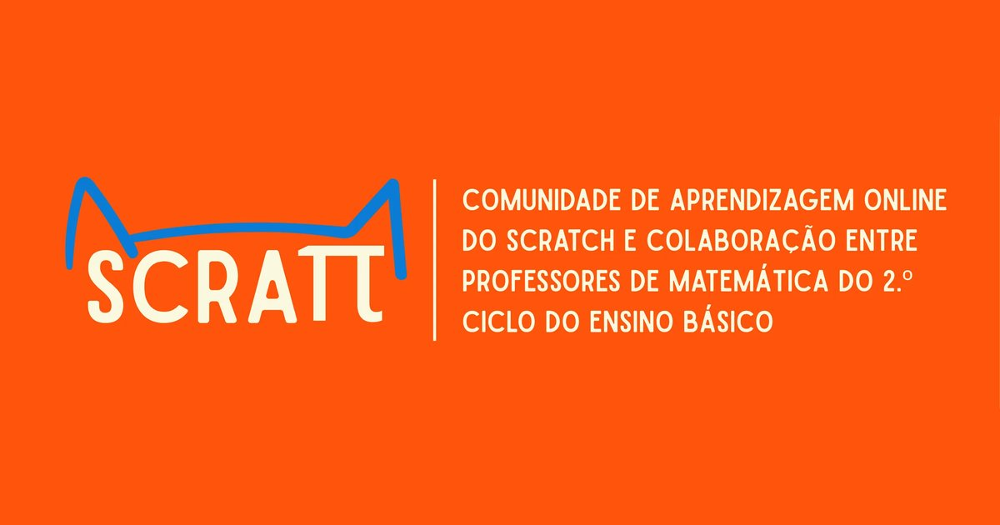

Site institucional · Desenvolvido por mim
Scraπ: Scratch e Matemática
Site do projeto Scraπ, uma comunidade de aprendizagem que junta o Scratch e professores de Matemática do 2.º ciclo do Ensino Básico. Fiz o site de raiz: design, páginas, versão para telemóvel e publicação.
- Design responsivo, com menu próprio para telemóvel
- Aviso de cookies e página de aviso legal (RGPD)
- SEO: sitemap, robots.txt e imagem de partilha nas redes sociais
- Fontes alojadas no próprio site e imagens em WebP para carregar depressa